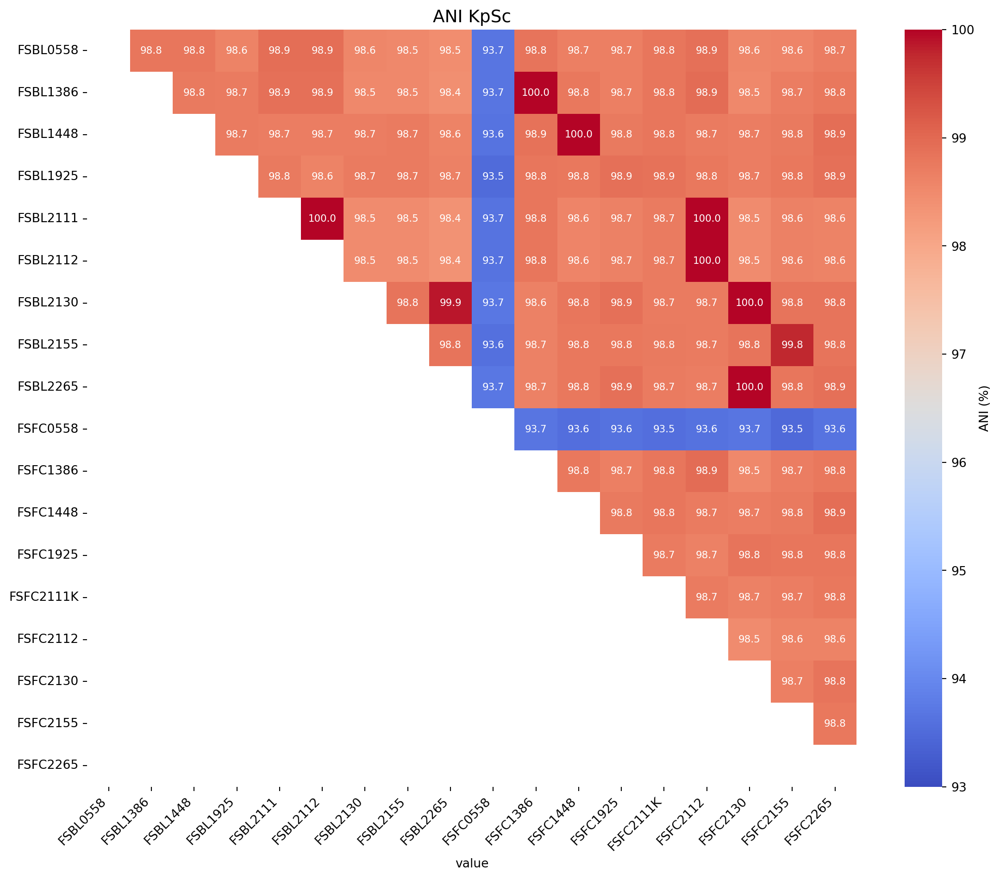
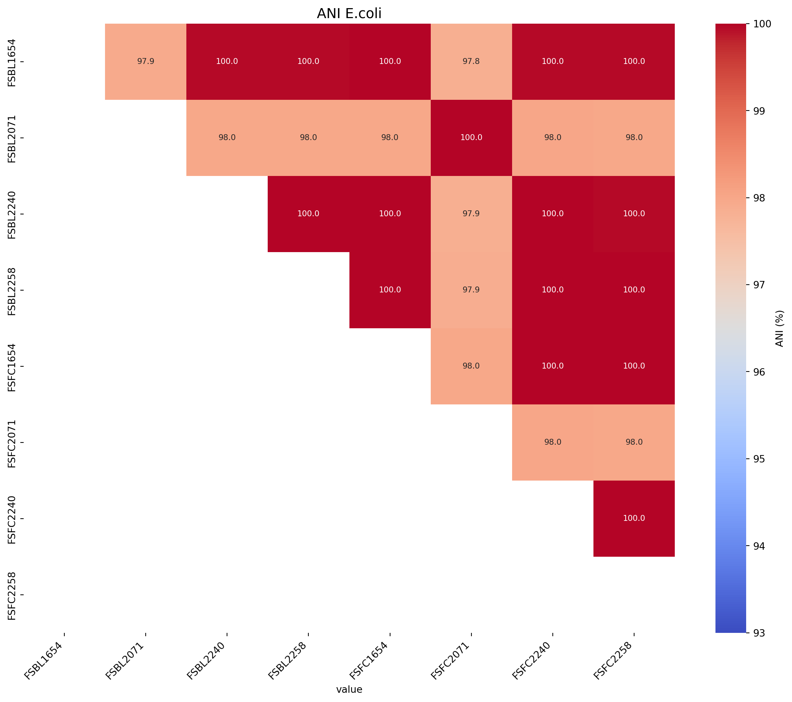
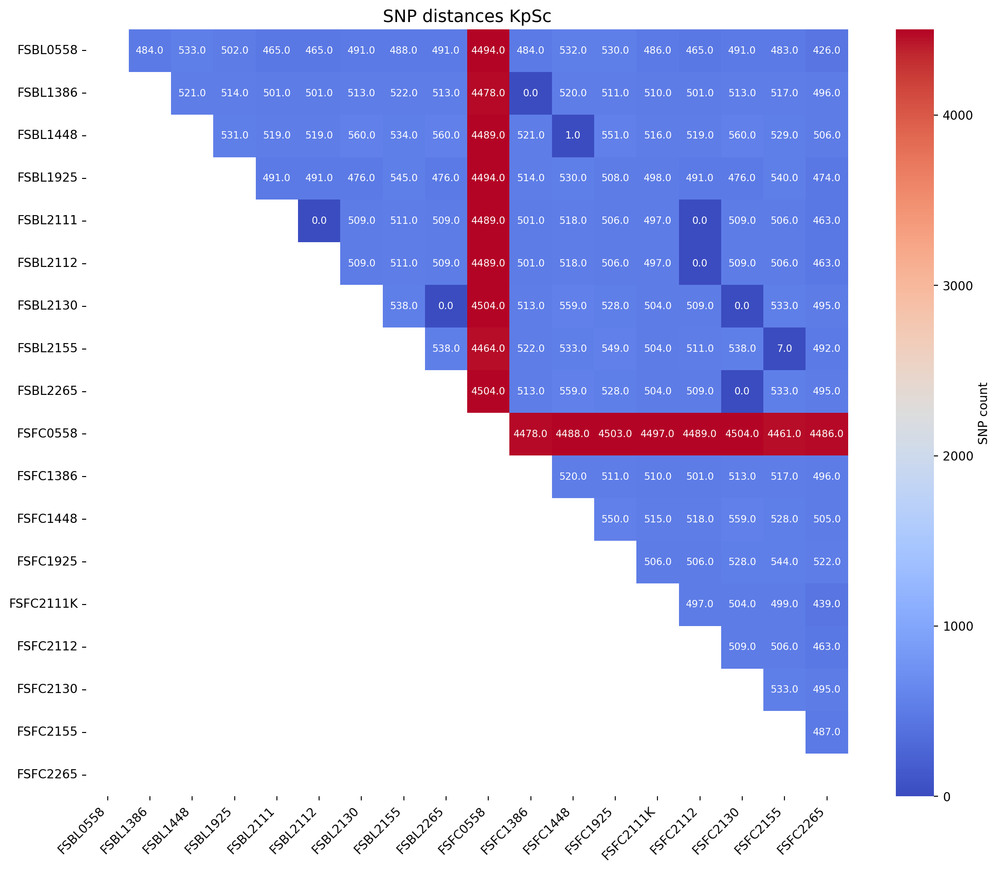
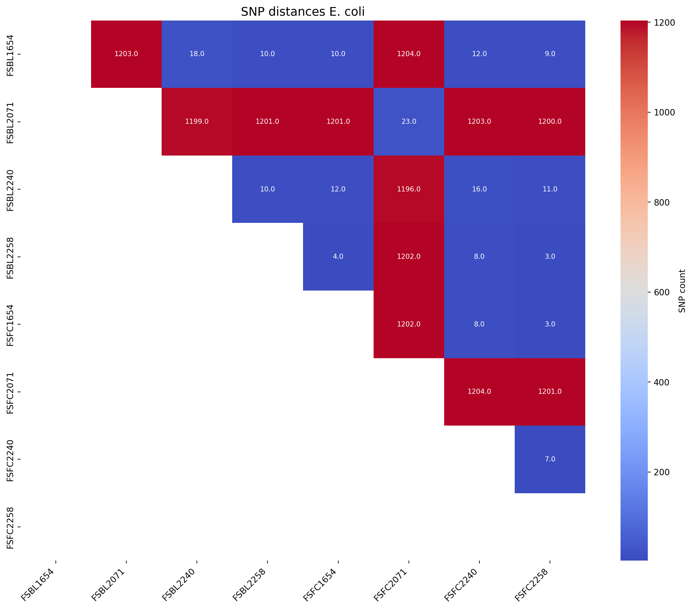

# Install libraries as necessary
#pip install openpyxl
#pip install pandas
#pip install matplotlib
#pip install seaborn
#pip install numpy
#import importlib.metadata1: ANI and SNP distance matrices
Introduction
This tutorial will take n genome sequences and run algorithms to determine average nucleotide idenitities (ANI) and core genome single nucleotide polymorphisms (SNPs), visualising the distances as heatmaps in python.
This workflow uses JSpeciesWS for ANI, SNP-dists for SNP distances, and seaborn and matplotlib in python to visualise the distances as heatmaps.
For a more in-depth tutorial on using ANI and SNP distances to determine isolate relatedness see my ANI and SNP distances github repo.
Part 1 - ANI matrix with python
1.1: Install libraries
Next load the libraries
import pandas as pd
import matplotlib.pyplot as plt
import matplotlib as mpl
import seaborn as sns
import numpy as np1.2: Create a function which makes a ANI heatmap
def create_ani_heatmap_rotate(title, input_file, rotation=0, lower_legend=90, upper_legend=100):
"""
Reads ANI values from a table and creates a triangular heatmap with rotation options.
Parameters:
input_file (str): Path to the Excel file containing the ANI table.
rotation (int): Rotation angle for the heatmap (0, 90, 180, 270).
output_file_png (str): Path to save the generated heatmap as a PNG file.
output_file_svg (str): Path to save the generated heatmap as an SVG file.
"""
# Load the table, ensuring the first column is used as row labels
ani_table = pd.read_excel(input_file, index_col=0)
# Ensure all values are numeric (convert strings to floats if necessary)
ani_table = ani_table.apply(pd.to_numeric, errors='coerce')
# Check for and handle any missing (NaN) values
if ani_table.isnull().values.any():
print("Warning: Missing or invalid values found. Filling with 0.")
ani_table.fillna(0, inplace=True)
# Rotate the ANI table if necessary
if rotation == 90:
ani_table = ani_table.transpose()
elif rotation == 180:
ani_table = ani_table.iloc[::-1, ::-1]
elif rotation == 270:
ani_table = ani_table.transpose().iloc[::-1, ::-1]
elif rotation not in [0, 90, 180, 270]:
raise ValueError("Rotation must be 0, 90, 180, or 270 degrees.")
# Generate a mask for the upper triangle (rotate mask based on rotation)
mask = np.triu(np.ones_like(ani_table, dtype=bool))
if rotation == 90 or rotation == 270:
mask = np.transpose(mask)
elif rotation == 180:
mask = np.flip(mask)
# Plot the heatmap
plt.figure(figsize=(12, 10)) # Adjust figure size
sns.heatmap(
ani_table,
annot=True,
fmt=".1f",
mask=mask,
cmap="coolwarm",
vmin=lower_legend, # Set fixed color scale minimum
vmax=upper_legend, # Set fixed color scale maximum
annot_kws={"size": 8}, # Adjust annotation text size
xticklabels=ani_table.columns,
yticklabels=ani_table.index,
cbar_kws={"label": "ANI (%)"}
)
plt.xticks(fontsize=10, rotation=45, ha="right") # Adjust x-axis ticks
plt.yticks(fontsize=10) # Adjust y-axis ticks
plt.title(f"{title}", fontsize=14) # Add title
plt.tight_layout() # Adjust padding
plt.show()1.3: Create the ANI heatmaps
First we will produce an ANI matrix for Klebsiella pneumoniae species types @KpSc-ANI
# Call the function to create the heatmap
fig_title = "ANI KpSc"
input_file = "data/JSpeciesWS_all_hybracter_1448_LR_FC1654_FC2240_UNI_ANIb_half_triangle_FC_rearranged_Klebsiella_spp.xlsx"
create_ani_heatmap_rotate(title=fig_title, input_file=input_file, rotation=90, lower_legend=93, upper_legend=100)Warning: Missing or invalid values found. Filling with 0.
Next we will produce an ANI matrix for E. coli species types @Ec-ANI
# Call the function to create the heatmap
fig_title = "ANI E.coli"
input_file = "data/JSpeciesWS_all_hybracter_1448_LR_FC1654_FC2240_UNI_ANIb_half_triangle_FC_rearranged_E.coli.xlsx"
create_ani_heatmap_rotate(title=fig_title, input_file=input_file, rotation=90, lower_legend=93, upper_legend=100)Warning: Missing or invalid values found. Filling with 0.
Part 2 - SNP distance matrix with python
Make sure you have all the required libraries installed, if you need to install them see Part 1.1: Install libraries
2.1: Create a function which makes a SNP distance heatmap
def create_snp_heatmap(title, input_file, rotation=0):
"""
Reads ANI values from a table and creates a triangular heatmap.
Parameters:
input_file (str): Path to the Excel file containing the ANI table.
output_file (str): Path to save the generated heatmap.
"""
# Load the table, ensuring the first column is used as row labels
ani_table = pd.read_excel(input_file, index_col=0)
# Ensure all values are numeric (convert strings to floats if necessary)
ani_table = ani_table.apply(pd.to_numeric, errors='coerce')
# Check for and handle any missing (NaN) values
if ani_table.isnull().values.any():
print("Warning: Missing or invalid values found. Filling with 0.")
ani_table.fillna(0, inplace=True)
# Rotate the ANI table if necessary
if rotation == 90:
ani_table = ani_table.transpose()
elif rotation == 180:
ani_table = ani_table.iloc[::-1, ::-1]
elif rotation == 270:
ani_table = ani_table.transpose().iloc[::-1, ::-1]
elif rotation not in [0, 90, 180, 270]:
raise ValueError("Rotation must be 0, 90, 180, or 270 degrees.")
# Generate a mask for the upper triangle (rotate mask based on rotation)
mask = np.triu(np.ones_like(ani_table, dtype=bool))
if rotation == 90 or rotation == 270:
mask = np.transpose(mask)
elif rotation == 180:
mask = np.flip(mask)
# Plot the heatmap
plt.figure(figsize=(12, 10)) # Adjust figure size
sns.heatmap(
ani_table,
annot=True,
fmt=".1f",
mask=mask,
cmap="coolwarm", # Colours for legend: options: coolwarm, RdBu
annot_kws={"size": 8}, # Adjust annotation text size
xticklabels=ani_table.columns,
yticklabels=ani_table.index,
cbar_kws={"label": "SNP count"}
)
plt.xticks(fontsize=10, rotation=45, ha="right") # Adjust x-axis ticks
plt.yticks(fontsize=10) # Adjust y-axis ticks
plt.title(f"{title}", fontsize=14) # Add title
plt.tight_layout() # Adjust padding
plt.show()2.2: Create the SNP distance heatmaps
First we will produce an SNP distance matrix for Klebsiella pneumoniae species types @KpSc-SNP
# Call the function to create the heatmap
fig_title = "SNP distances KpSc"
input_file = "data/snp_matrix_all_R1386_half_triangle_FC_Klebsiella_spp.xlsx"
create_snp_heatmap(title=fig_title, input_file=input_file, rotation=90)Warning: Missing or invalid values found. Filling with 0.
Next we will produce an SNP distance matrix for E. coli species types @Ec-SNP
# Call the function to create the heatmap
fig_title = "SNP distances E. coli"
input_file = "data/snp_matrix_all_R1386_half_triangle_FC_E.coli.xlsx"
create_snp_heatmap(title=fig_title, input_file=input_file, rotation=90)Warning: Missing or invalid values found. Filling with 0.